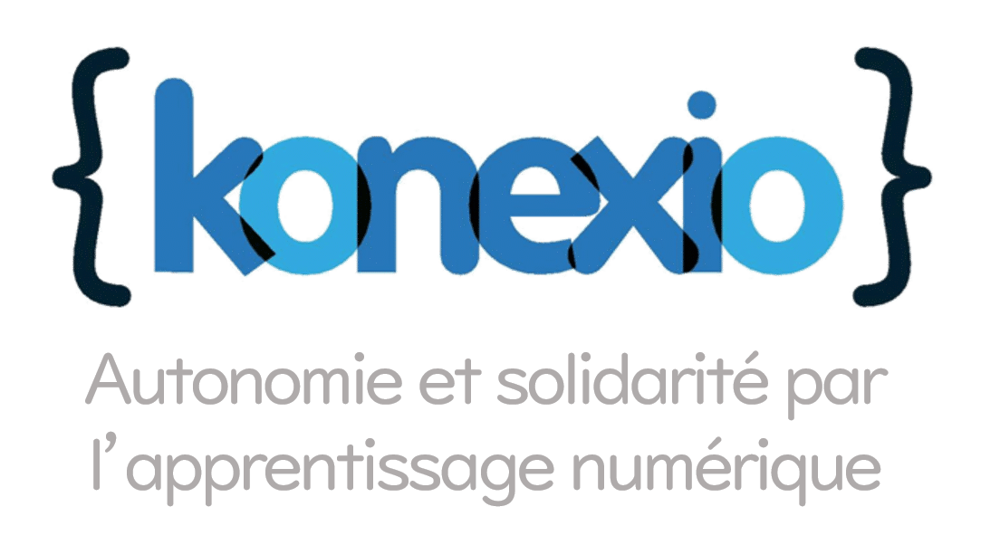

Jean Guo a co-fondé Konexio sur la base des recherches académiques qu’elle a conduit en France sur les difficultés économiques et sanitaires des populations marginalisées, notamment les réfugiés et les migrants. En tant qu’enfant d’immigrés, elle était aux premières loges pour observer les défis sociaux, culturels, éducatifs et professionnels auxquels devaient faire face leur famille en arrivant dans un nouveau pays. Consciente de la forte interconnexion entre inclusion numérique et inclusion sociale, elle a ainsi décidé de créer Konexio pour permettre à des personnes étrangères et/ou éloignées du marché du travail d’acquérir des compétences recherchées par les employeurs. Jean a très vite été soutenue par les actions d’une équipe solide de bénévoles dévoués, issus de parcours et d’horizons différents : formateurs, développeurs, spécialistes du marketing digital, consultants, experts financiers, et bien plus.
Depuis des années, Konexio discute avec l’ensemble de ses parties prenantes pour trouver des solutions afin de lutter contre l’illectronisme. Fort de ses échanges, Konexio, partage 7 propositions concrètes pour accompagner les personnes éloignées de l’emploi ou fragilisées dans leur travail. De la création d’un Droit Universel à la Formation Numérique, à la conception d’algorithmes inclusifs en passant par le numérique responsable comme modèle, ce sont 5 axes complémentaires qui sont développés.
